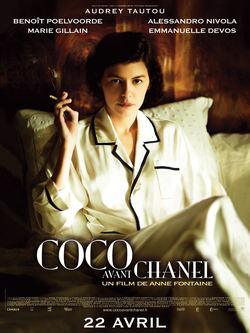

The Devil Wears Prada (2006)
Aspiring journalist Andy Sachs lands a job as the assistant to Miranda Priestly, the ruthless editor of Runway fashion magazine. The film explores high-fashion culture, personal identity, and workplace ambition

Aspiring journalist Andy Sachs lands a job as the assistant to Miranda Priestly, the ruthless editor of Runway fashion magazine. The film explores high-fashion culture, personal identity, and workplace ambition
Set in 1950s London, this drama follows Reynolds Woodcock, a meticulous dressmaker, and his turbulent relationship with Alma, a young woman who becomes his muse and disrupts his controlled life.

This elegant biopic traces the early life of Gabrielle "Coco" Chanel, from her humble beginnings as an orphan to her rise as the revolutionary designer who redefined women’s fashion. Starring Audrey Tautou, the film captures Chanel’s defiance of corseted silhouettes and her creation of timeless staples like the little black dress and Chanel No. 5 perfume.
